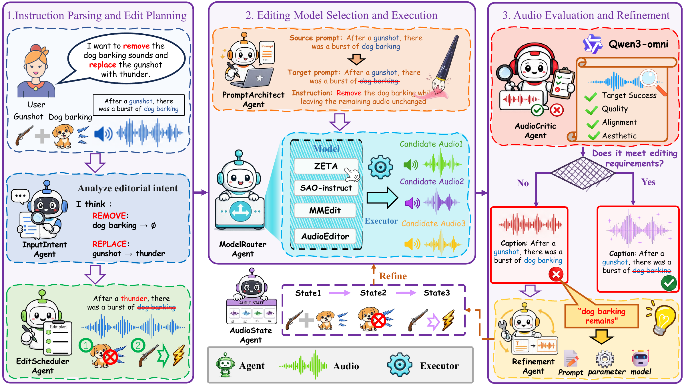

Abstract
Existing audio editing methods provide different capabilities for operations such as audio addition, removal and replacement, making a single editor insufficient for diverse and complex instructions. In this paper, we propose AUDIOEDIT-AGENT, a collaborative multi-agent framework for instruction-guided audio editing. AUDIOEDIT-AGENT decomposes a complex instruction into a sequence of editing operations and selects an appropriate audio editing model for each operation. Instead of directly returning a single model output, the framework generates multiple candidate audios and employs an audio critic to evaluate the editing results. When an attempt does not satisfy the editing requirements, the critic feedback is used to refine the prompt, model selection, or inference parameters for the next attempt. This process coordinates different audio editing models within a unified framework and supports both single-step and compound audio editing.
Framework Overview

Audio Samples of Add Editing Tasks
Single-turn tasks that add a target sound event while preserving the source scene.
Audio Samples of Remove Editing Tasks
Single-turn tasks that remove a specified sound event while preserving the remaining audio.
Audio Samples of Replace Editing Tasks
Single-turn tasks that replace one sound event with another while keeping the acoustic scene stable.
Audio Samples of Multi-turn Editing Tasks
Composite edits with multiple instruction steps and a final target scene.